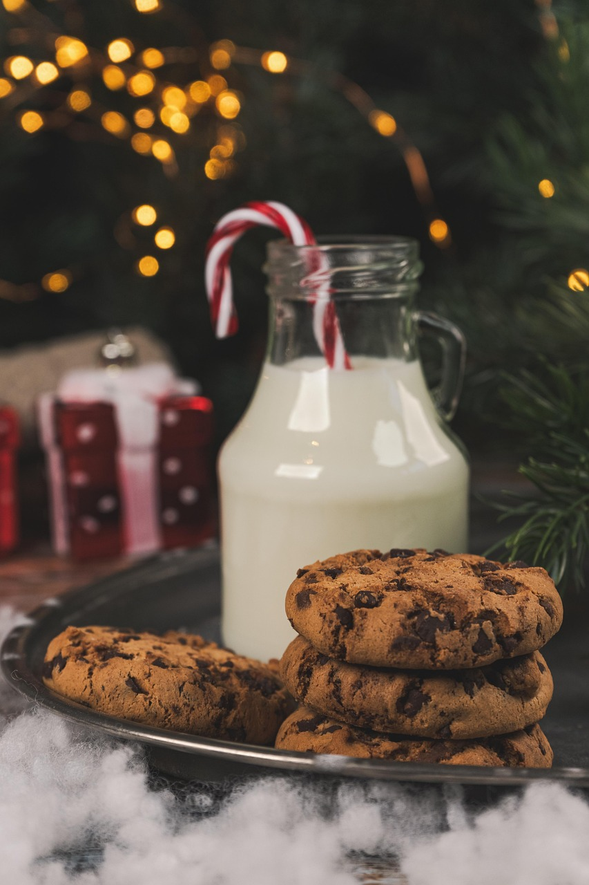

Home
Best Chocolate Chip Cookeis

Description
This recipe creates 3 dozen chocolate chip cookies with chewy centers and crisp edges.
Quick and easy, these cookies take around 15 minutes to prep and 20 minutes to cook!
Ingredients
- 2 1/4 cups all-purpose flour
- 1 teaspoon baking soda
- 1 cup softened butter
- 3/4 cup packed brown sugar
- 1/4 cup white sugar
- 3.4 ounces instant vanilla pudding mix
- 2 eggs
- 1 teaspoon vanilla extract
- 2 cups semisweet chocolate chips
Steps
- Preheat oven to 350 degrees F
- Sift together flour and baking soda in a medium bowl, set aside.
- Cream together butter, brown sugar, and white sugar in a large bowl.
- Add in pudding mix until blended. Stir in eggs and vanilla.
- Add flour mixture to butter mixture until well incorporated. Fold in chocolate chips.
- Scoop cookies onto ungreased cookie sheets.
- Bake in preheated oven until golden brown, around 10 - 12 minutes.